Et tilbud er en forretningsproposisjon hvor en leverandør presenterer sine produkter, tjenester, priser og vilkår for en potensiell kunde. I regnskapssammenheng er tilbud en viktig del av salgsprocessen og danner grunnlaget for kontraktsinngåelse og senere fakturering. Tilbud representerer ikke bare en salgsmulighet, men også en regnskapsmessig forpliktelse som må håndteres i samsvar med god regnskapsskikk. Se også: Ordrebekreftelse
Seksjon 1: Tilbudets Grunnleggende Konsept
Et tilbud fungerer som en juridisk invitasjon til å inngå en kontrakt, og har derfor både kommersielle og regnskapsmessige implikasjoner.
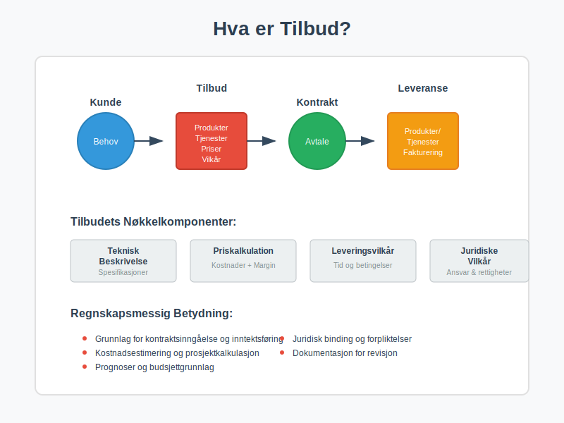
1.1 Juridisk Definisjon av Tilbud
Tilbud i juridisk forstand er:
- En konkret forespørsel om å inngå en bestemt avtale
- Bindende for tilbyderen i tilbudsperioden
- Kan aksepteres av mottakeren for å skape en gyldig kontrakt
- Må inneholde alle vesentlige avtalevilkår
1.2 Regnskapsmessig Betydning
Fra regnskapsperspektiv påvirker tilbud:
- Prognoser og budsjetting
- Kontraktsvurdering og risikoanalyse
- Prosjektkalkulasjon og kostnadsestimering
- Kapasitetsplanlegging og ressursallokering
1.3 Tilbudsprosessens Faser
| Fase | Aktiviteter | Regnskapsmessig Fokus |
|---|---|---|
| Forespørsel | Kunde uttrykker behov | Mulighetsregistrering |
| Behovsanalyse | Kartlegging av krav | Kostnadsestimering |
| Prisberegning | Kalkulasjon og marging | Prissetting |
| Tilbudsutsendelse | Formell proposisjon | Forpliktelsesregistrering |
| Oppfølging | Svar og forhandlinger | Kontraktsmodifikasjon |
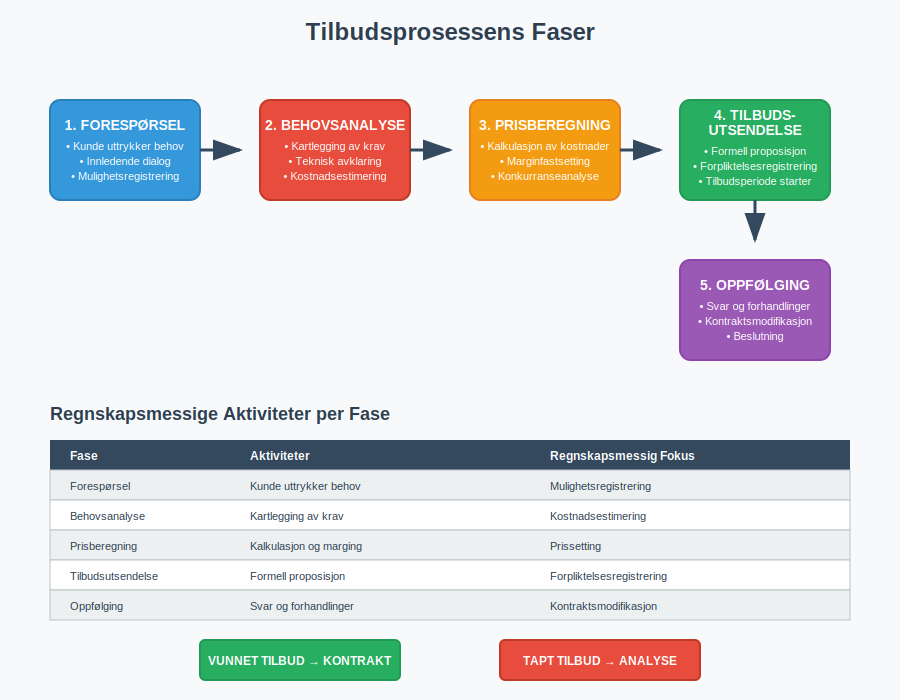
Seksjon 2: Tilbudstyper og Karakteristika
2.1 Forespurt vs. Uforespurt Tilbud
Forespurte tilbud:
- Basert på anbudsinnbydelser eller forespørsler
- Strukturerte krav og evalueringskriterier
- Konkurransesituasjon med andre leverandører
- Høyere sannsynlighet for gevinst
Uforespurte tilbud:
- Proaktive salgstiltak
- Krever større markedsinnsikt
- Høyere risiko, men potensielt høyere marginer
- Viktig for utvikling av nye kundeforhold
2.2 Bransjespesifikke Tilbudstyper
Bygge- og Anleggsbransjen
- Totalentrepriser med fast pris
- Komplekse tekniske spesifikasjoner
- Lang prosjektperiode og periodisering
IT og Konsulentbransjer
- Time & Material kontrakter
- Iterative leveranser og endringshåndtering
- Immaterielle leveranser og avregningsmetoder
Produksjonsbedrifter
- Rammeavtaler med volumrabatter
- Standardiserte produkter med prisvariasjoner
- Lageroptimalisering og leveringstider
| Bransje | Typisk Tilbudsperiode | Hovedfokus | Regnskapsmessige Utfordringer |
|---|---|---|---|
| Bygg/Anlegg | 3-6 måneder | Teknisk løsning | Prosjektregnskap |
| IT/Konsulent | 2-8 uker | Kompetanse/metodikk | Tidsregistrering |
| Produksjon | 1-4 uker | Pris/kvalitet | Varekostnad |
| Tjenester | 1-6 uker | Service/tilgjengelighet | Periodisering |
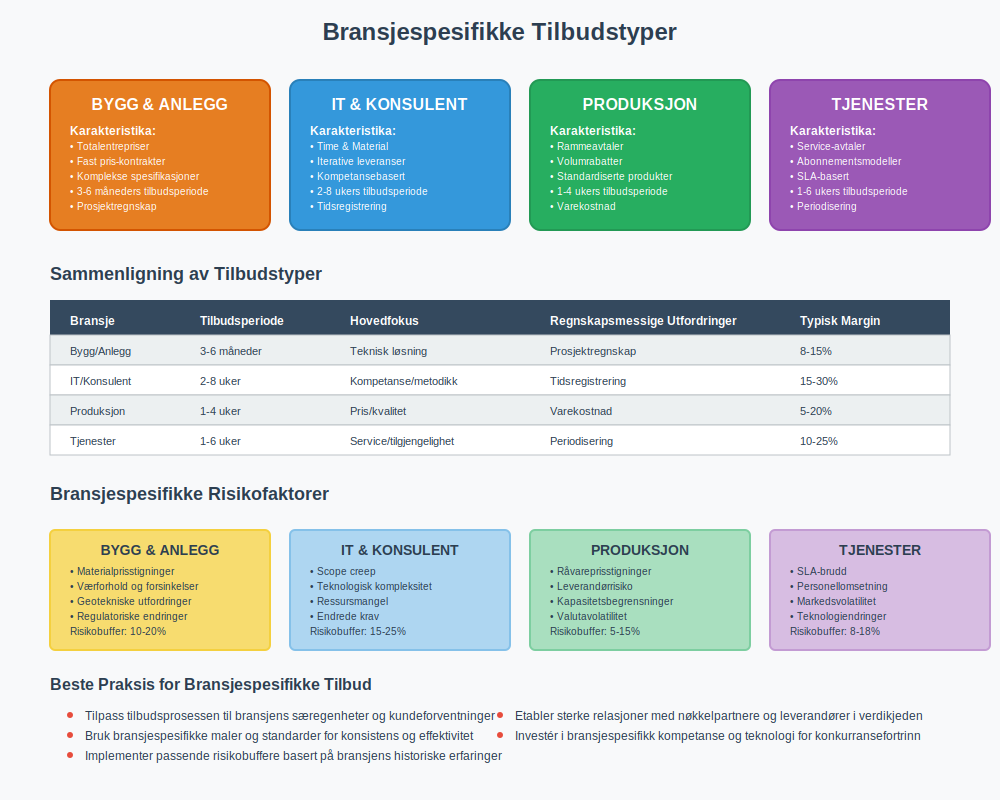
Seksjon 3: Tilbudskalkulation og Prissetning
3.1 Kostnadsbasert Prissetting
Direkte kostnader:
- Råvarer og materialer
- Arbeidskraft direkte knyttet til leveransen
- Underleverandører og eksterne tjenester
Indirekte kostnader:
- Overhead og administrative kostnader
- Salgs- og markedsføringskostnader
- Avskrivninger på utstyr
3.2 Marginalberegning
Dekningsbidragsanalyse:
Salgspris
- Variable kostnader
= Dekningsbidrag I
- Produktspesifikke faste kostnader
= Dekningsbidrag II
- Fellesfaste kostnader
= Resultat
3.3 Risikoestimering og Buffere
Identifisering av risikoer:
- Teknisk risiko: Ukjente problemstillinger
- Kommersiell risiko: Markedsendringer
- Operasjonell risiko: Ressursmangel eller forsinkelser
Risikobuffere:
- Kontingency: 5-15% for ukjente forhold
- Eskalering: Prisstigning i prosjektperioden
- Valutarisiko: For internasjonale kontrakter
| Risikofaktor | Typisk Buffer | Håndteringsmetode |
|---|---|---|
| Teknisk kompleksitet | 10-20% | Prototype/testing |
| Markedsvolatilitet | 5-15% | Prisindeksering |
| Ressursknapphet | 8-12% | Fleksible kontrakter |
| Valutaeksponering | 2-8% | Valutasikring |
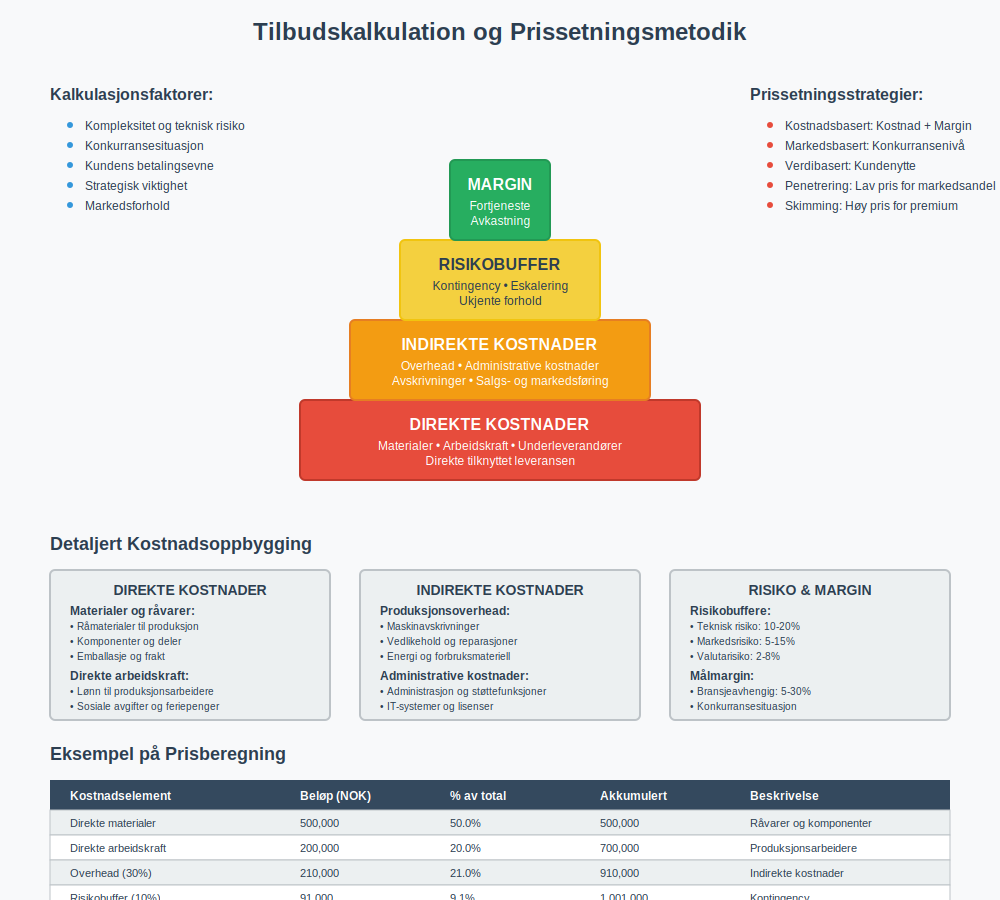
Seksjon 4: Juridiske og Kontraktsmessige Aspekter
4.1 Tilbudets Bindende Karakter
Tilbyder er bundet av:
- Tilbudsperioden som er oppgitt
- De tekniske og kommersielle vilkårene
- Prisene som er kommunisert
- Leveringsvilkår og betalingsbetingelser
Unntak fra binding:
- Åpenbare feil eller misforståelser
- Vesentlige endringer i forutsetninger
- Force majeure hendelser
- Tilbudt med forbehold
4.2 Kontraktsmodifikasjon
Endringer etter tilbudsavgivelse:
- Krever skriftlig dokumentasjon
- Påvirker pris og leveringstid
- Kan utløse ny tilbudsprosess
- Regnskapsmessig behandling av endringer
4.3 Angrerett og Tilbaketrekking
Tilbaketrekking før aksept:
- Mulig dersom ingen bindende frist
- Erstatningsansvar kan oppstå
- Reputasjonsmessige konsekvenser
Etter kontraktsinngåelse:
- Begrenset angrerett for forbrukere
- Erhvervskunder har normalt ikke angrerett
- Kontraktsbruddsansvar ved ensidig heving
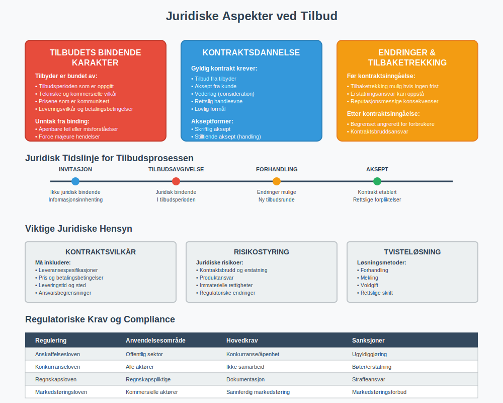
Seksjon 5: Regnskapsføring av Tilbud og Kontrakter
5.1 Regnskapsmessig Tidspunkt
Tilbudsstadiet:
- Ingen inntektsføring (kun kostnader)
- Tilbudskostnader som salgsomkostninger
- Eventualforpliktelser i noter
Kontraktsinngåelse:
- Kontraktseiendel etableres
- Inntektsføring etter leveranseprinsipper
- Periodisering av kostnader og inntekter
5.2 IFRS 15 og Kontraktsinntekter
Femtrinnsprosessen:
- Identifiser kontrakt med kunde
- Identifiser ytelsesforpliktelser i kontrakten
- Bestem transaksjonsprisen
- Allokér transaksjonsprisen til ytelsesforpliktelser
- Innregnіng av inntekt når ytelsesforpliktelse oppfylles
5.3 Praktisk Regnskapsføring
Ved tilbudsavgivelse:
Dr. Salgsomkostninger XX.XXX
Kr. Bank/Leverandørgjeld XX.XXX
(Kostnader ved tilbudsutarbeidelse)
Ved kontraktsinngåelse:
Dr. Kontraktseiendel XXX.XXX
Kr. Kontraktsinntekter XXX.XXX
(Inntektsføring ved ytelsesoppfyllelse)
Ved fakturering:
Dr. Kundefordringer XXX.XXX
Kr. Kontraktseiendel XXX.XXX
(Overføring til kundefordring)
| Transaksjon | Debet | Kredit | Timing |
|---|---|---|---|
| Tilbudskostnader | Salgskostnad | Bank/Kreditor | Ved påløp |
| Kontraktsinngåelse | Kontraktseiendel | Inntekt | Ved leveranse |
| Fakturering | Debitor | Kontraktseiendel | Ved faktura |
| Betaling | Bank | Debitor | Ved innbetaling |
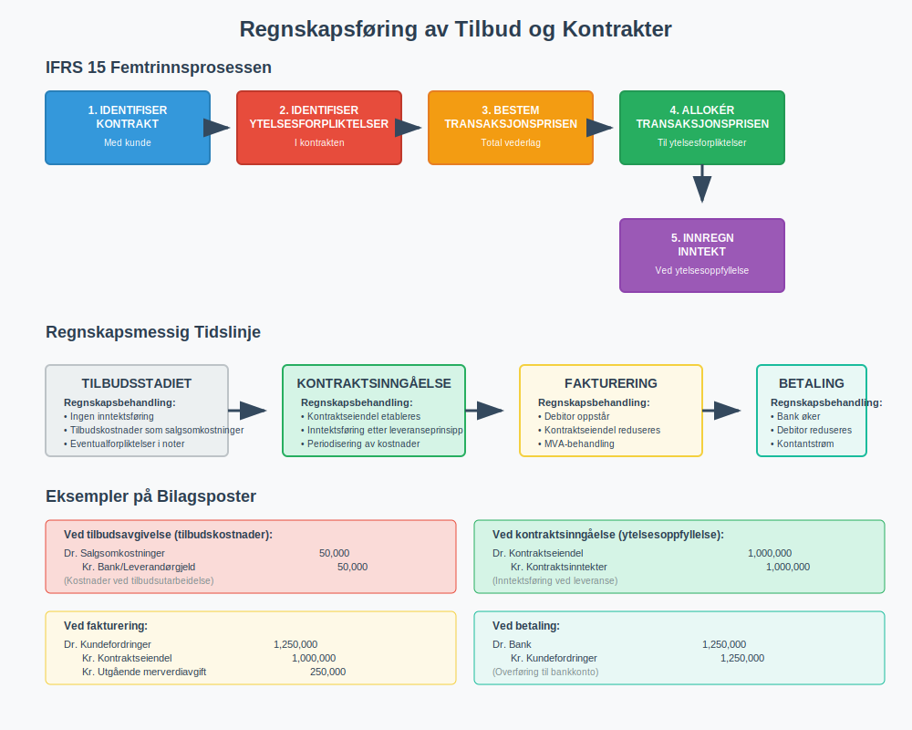
Seksjon 6: Tilbudsstyring og Systemer
6.1 Tilbudsprosess og Workflow
Digitale tilbudssystemer støtter:
- Standardiserte maler og prosesser
- Automatisk kalkulering og prisberegning
- Godkjenningsworkflows og sporbarhet
- Integration med ERP-systemer
6.2 CRM-integrasjon
Customer Relationship Management:
- Kundehistorikk og tidligere tilbud
- Pipeline-styring og salgsprognoser
- Oppfølging og kundeinteraksjon
- Rapportering og analyse av tilbudsresultater
6.3 Dokumenthåndtering
Versjonskontroll:
- Revisjonssporing av tilbudsendringer
- Digital signering og godkjenning
- Arkivering i henhold til regnskapslov
- Backup og datasikkerhet
| System | Hovedfunksjon | Integrasjoner | Fordeler |
|---|---|---|---|
| CRM | Kundestyring | ERP, Email | Sentralisert kundeinformasjon |
| CPQ | Konfigurasjon/Prising | CRM, ERP | Automatisert prissetting |
| DMS | Dokumenthåndtering | Alle systemer | Sikker dokumentlagring |
| BI | Analyse/Rapportering | CRM, ERP | Databaserte beslutninger |
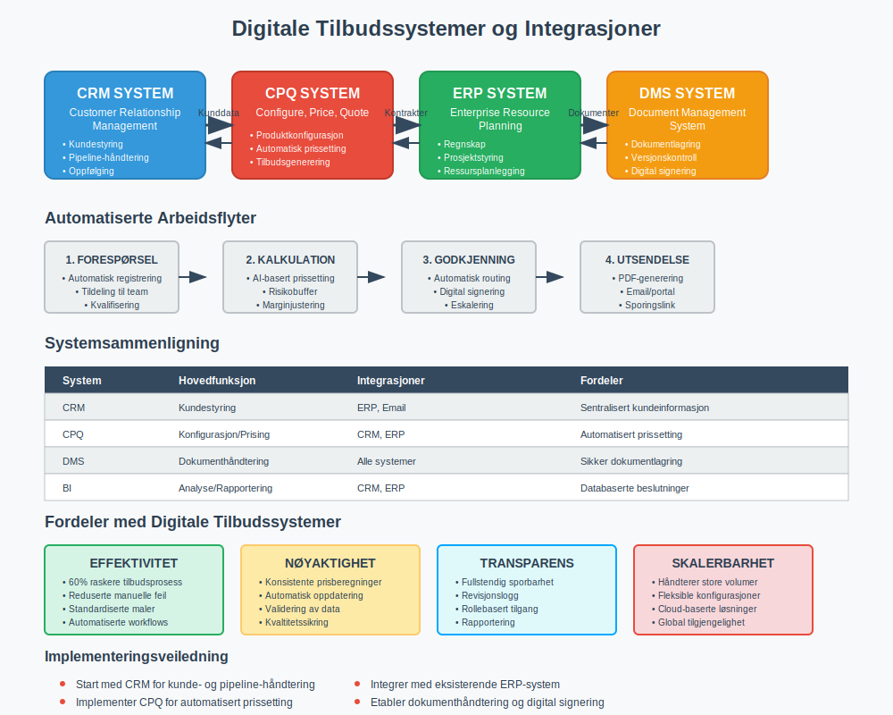
Seksjon 7: Tilbudsanalyse og KPIer
7.1 Sentrale Tilbudsmålinger
Volummålinger:
- Antall tilbud avgitt per periode
- Gjennomsnittlig tilbudsverdi
- Tilbudspipeline og verdi
- Geografisk og sektormessig fordeling
Kvalitetsmålinger:
- Vinnrate (% vunnede tilbud)
- Gjennomsnittlig tilbudstid
- Marginal på vunnede kontrakter
- Kundetilfredshet med tilbudsprosess
7.2 Lønnsomhetsanalyse
ROI på tilbudsaktivitet:
ROI = (Inntekter fra vunnede tilbud - Tilbudskostnader) / Tilbudskostnader × 100%
Payback-periode:
- Tid fra tilbudsavgivelse til første inntekt
- Break-even punkt for tilbudsinvestering
- Kapitalbinding i tilbudsprosessen
7.3 Benchmarking og Forbedring
| KPI | Industristandard | Beste praksis | Forbedringspotensial |
|---|---|---|---|
| Vinnrate | 15-25% | 30-40% | Bedre kvalifisering |
| Tilbudstid | 2-6 uker | 1-3 uker | Standardisering |
| Marginal | 8-15% | 20-25% | Verdibasert prising |
| Kostnad per tilbud | 2-5% av verdi | 1-3% av verdi | Automatisering |
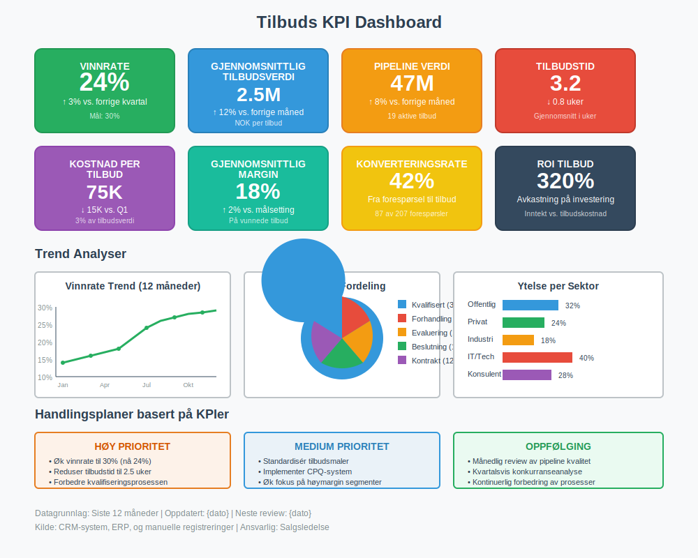
Seksjon 8: Risikostyring i Tilbudsprosessen
8.1 Identifisering av Risikoer
Kommersielle risikoer:
- Prispress fra konkurrenter
- Endringer i markedsbetingelser
- Valutavolatilitet for internasjonale tilbud
- Kredittrisiko hos kunder
Operasjonelle risikoer:
- Kapasitetsmangel ved leveranse
- Teknologiske utfordringer
- Leverandørrisiko for underleveranser
- Kompetansemangel i organisasjonen
8.2 Risikoreduserende Tiltak
Kontraktsmessige beskyttelser:
- Prisindeksering og eskaleringsklaususler
- Force majeure bestemmelser
- Begrensninger i leverandøransvar
- Betalingssikkerhet og garantier
Operasjonelle beskyttelser:
- Kvalitetssikring av tilbudsprosessen
- Backup-planer for kritiske leveranser
- Forsikringsdekning for store prosjekter
- Partneravtaler og allianser
8.3 Kontinuerlig Risikostyring
| Risikotype | Sannsynlighet | Konsekvens | Mitigering |
|---|---|---|---|
| Prisrisiko | Høy | Medium | Fleksible kontrakter |
| Leveringsrisiko | Medium | Høy | Redundante leverandører |
| Teknisk risiko | Medium | Høy | Prototyping/testing |
| Kredittrisiko | Lav | Høy | Kredittvurdering |
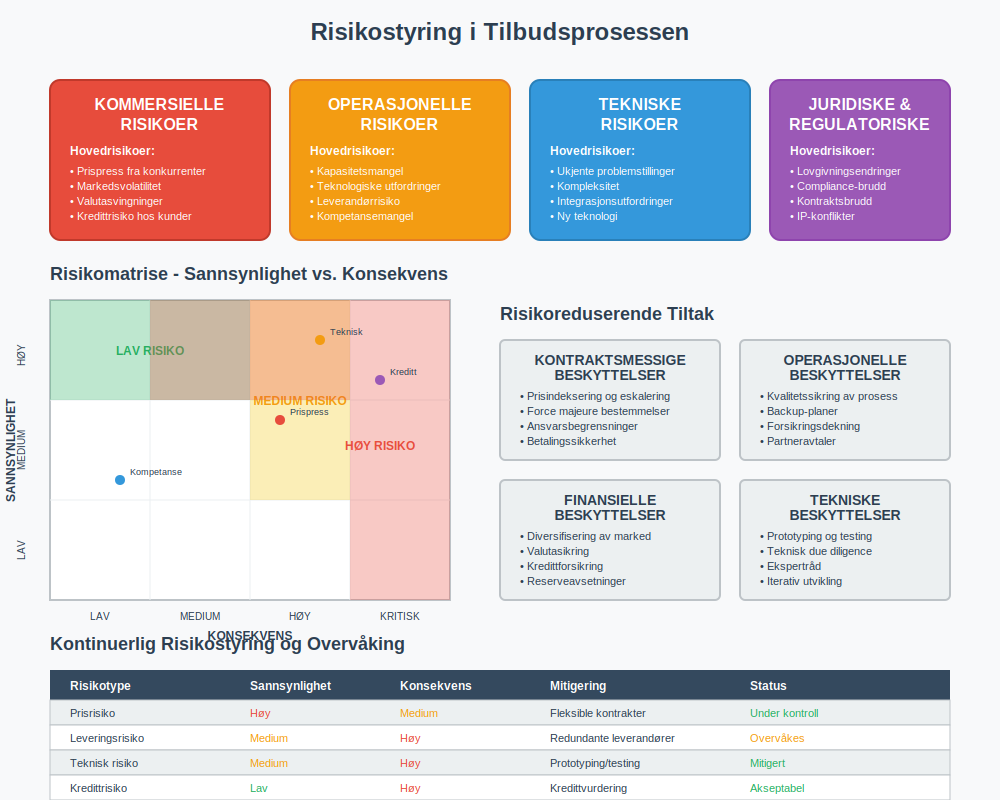
Seksjon 9: Compliance og Regulatoriske Krav
9.1 Offentlige Anskaffelser
Lov om offentlige anskaffelser:
- Likebehandling og ikke-diskriminering
- Åpenhet og etterprøvbarhet
- Forholdsmessighet i krav og kriterier
- Konkurranse og effektivitet
EU-direktiver:
- Terskelverdier for ulike anskaffelser
- Kunngjøringsplikt i DOFFIN/TED
- Klagerettsprosesser og rettssikkerhet
- Miljømessige og sosiale hensyn
9.2 Konkurranserett
Forbudte praksiser:
- Prissamarbeid og kartelldannelse
- Markedsdeling og kundefordeling
- Predatory pricing og undergravende konkurransemåter
- Misbruk av markedsdominans
9.3 Regnskapslovgivning
Bokføringsplikter:
- Dokumentasjon av tilbudsprosessen
- Sporbarhet av kalkulasjoner og beslutninger
- Årsregnskap og notetillegg
- Revisorattestasjon av store kontrakter
| Regulering | Anvendelsesområde | Hovedkrav | Sanksjoner |
|---|---|---|---|
| Anskaffelsesloven | Offentlig sektor | Konkurranse/åpenhet | Ugyldiggjøring |
| Konkurranseloven | Alle aktører | Ikke samarbeid | Bøter/erstatning |
| Regnskapsloven | Regnskapspliktige | Dokumentasjon | Straffeansvar |
| Markedsføringsloven | Kommersielle aktører | Sannferdig markedsføring | Markedsföringsverbot |
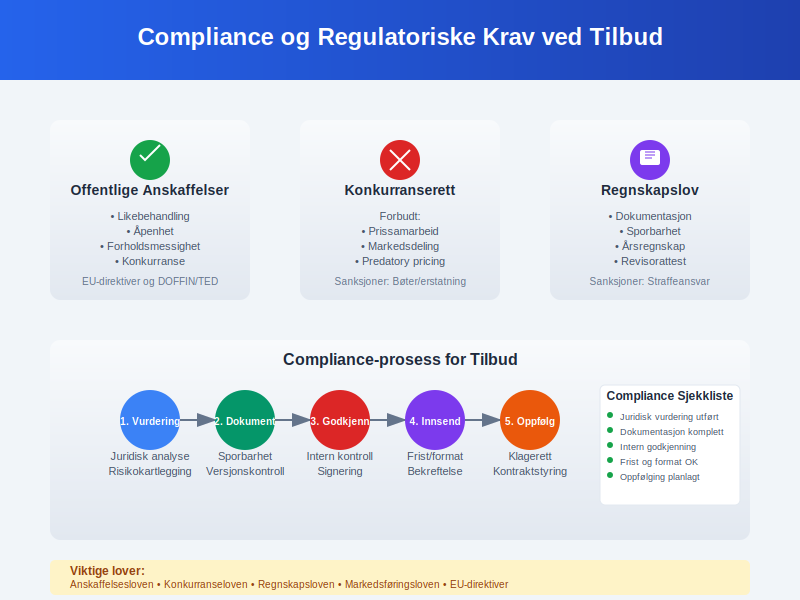
Seksjon 10: Digitalisering og Fremtidige Trender
10.1 Kunstig Intelligens i Tilbudsprosessen
AI-baserte løsninger:
- Automatisk tilbudsgenerering basert på historiske data
- Prediktiv analyse av vinnersannsynlighet
- Optimal prissetting gjennom maskinlæring
- Naturlig språkprosessering for kravanalyse
Machine Learning applikasjoner:
- Mønstergjenkjenning i kundepreferanser
- Risikoscoring av nye tilbudsmuligheter
- Konkurranseanalyse og benchmarking
- Kvalitetssikring av tilbudsinnhold
10.2 Blockchain og Smart Contracts
Fordeler med blockchain:
- Uforanderlig dokumentasjon av tilbudsprosess
- Automatisk oppfyllelse av kontraktsvilkår
- Redusert tillitskostnad mellom parter
- Transparent og sporbar transaksjonshåndtering
Smart contracts:
- Automatisk betaling ved leveransemilepæler
- Selvutførende sanksjoner ved kontraktsbrudd
- Integrert escrow-funksjoner for sikkerhet
- Reduserte administrative kostnader
10.3 Internet of Things (IoT) og Sanntidsdata
IoT-aktiverte tilbud:
- Sanntids ytelsesdata fra eksisterende installasjoner
- Prediktivt vedlikehold og serviceavtaler
- Bruksbasert prissetting og abonnementsmodeller
- Kontinuerlig optimalisering av leveranser
| Teknologi | Implementeringsgrad | Potensial | Utfordringer |
|---|---|---|---|
| AI/ML | Tidlig fase | Høyt | Datakvalitet |
| Blockchain | Pilotprosjekter | Høyt | Skalering/energi |
| IoT | Voksende bruk | Medium | Sikkerhet/integrering |
| RPA | Utbredt | Medium | Prosessmodning |
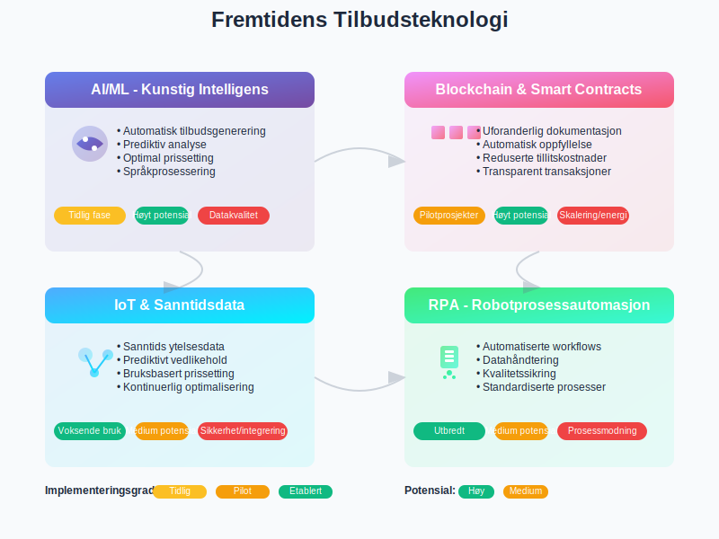
Seksjon 11: Internasjonale Perspektiver
11.1 Kulturelle Forskjeller i Tilbudsprosesser
Nordamerika:
- Direkte og konkurransefokusert tilnærming
- Korte beslutningstider og klar kommunikasjon
- Juridisk orientert kontraktsutforming
- Høy grad av standardisering
Asia-Stillehavsregionen:
- Relasjonsbyggende og langsiktig tilnærming
- Betydningen av ansikt og respekt i forhandlinger
- Hierarkiske beslutningsprosesser
- Viktighet av personlige møter og tillit
Europa:
- Regulatorisk kompleksitet og compliance-fokus
- Sterke arbeidstakerrettigheter og miljøkrav
- Konsensusbaserte beslutningsprosesser
- Historisk og kulturell kontekst
11.2 Valutarisiko og Sikring
Valutaeksponering:
- Transaksjonsrisiko: Endringer mellom tilbud og betaling
- Translationsrisiko: Rapportering i ulike valutaer
- Økonomisk risiko: Langsiktig konkurranseevne
Sikringsstrategier:
- Valutaterminer for kortsiktig eksponering
- Opsjoner for usikre kontrakter
- Naturlig sikring gjennom matchende in- og utbetalinger
- Prisindeksering til relevant valutakurv
11.3 Regulatoriske Forskjeller
| Region | Hovedfokus | Typiske Krav | Spesielle Hensyn |
|---|---|---|---|
| EU | Åpenhet/konkurranse | GDPR, anskaffelsesdirektiver | Digital Single Market |
| USA | Effektivitet/innovasjon | SEC-rapportering, antitrust | Buy American Act |
| Asia | Vekst/relasjoner | Lokalt innhold, JV-krav | Guanxi og nettverk |
| Midt-Østen | Stabilitet/sikkerhet | Islamsk finans, lokalisering | Geopolitisk risiko |
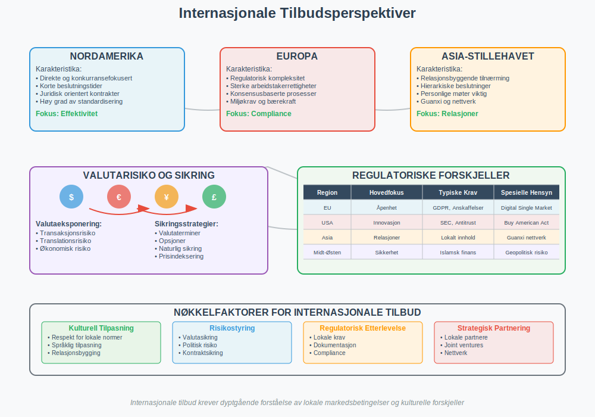
Seksjon 12: Bærekraftige Tilbud og ESG
12.1 Miljømessige Hensyn
Livssyklusanalyse:
- Miljøpåvirkning fra råmaterialer til avhending
- Karbonfotavtrykk og klimagassutslipp
- Sirkulære økonomi prinsipper
- Biodiversitet og økosystemtjenester
Grønne tilbudskriterier:
- Miljøsertifiseringer og standarder
- Fornybar energibruk og energieffektivitet
- Avfallsreduksjon og gjenvinning
- Bærekraftige transport- og logistikkløsninger
12.2 Sosiale og Etiske Dimensjoner
Samfunnsansvar:
- Arbeiderrettigheter og sikre arbeidsforhold
- Mangfold og inkludering i verdikjeden
- Lokalsamfunn påvirkning og bidrag
- Korrupsjonsbekjempelse og etikk
Supply chain responsibility:
- Due diligence av leverandører
- Menneskerettigheter og barnearbeid
- Konfliktmineraler og etisk sourcing
- Transparent rapportering og sporarhet
12.3 Styringsmessige (Governance) Faktorer
Bedriftsstyring:
- Uavhengighet og mangfold i styret
- Transparent beslutningstaking
- Risikostyring og internkontroll
- Etiske retningslinjer og compliance
| ESG-faktor | Tilbudspåvirkning | Målingsmetrikker | Rapporteringskrav |
|---|---|---|---|
| Miljø | Produktdesign/prosess | CO2, energi, avfall | EU-taksonomi |
| Sosialt | Leverandørvalg | Mangfold, sikkerhet | GRI-standarder |
| Styring | Beslutningsprosess | Etikk, compliance | Åpenhetsloven |

Konklusjon
Tilbud representerer et kritisk krysningspunkt mellom salg, regnskap og juridiske forpliktelser. I en stadig mer kompleks og digitalisert forretningsverden krever effektiv tilbudsstyring en helhetlig tilnærming som integrerer kommersielle, regnskapsmessige og strategiske perspektiver.
Nøkkelinnsikter for moderne tilbudsstyring:
- Strukturert prosess: Standardiserte workflows og klare godkjenningsprosesser sikrer kvalitet og sporbarhet
- Teknologiintegrasjon: Digitale verktøy for CRM, kalkulasjon og dokumenthåndtering øker effektivitet
- Risikostyring: Proaktiv identifisering og mitigering av kommersielle og operasjonelle risikoer
- Compliance: Etterlevelse av regulatoriske krav innen anskaffelser, konkurranse og regnskap
Regnskapsmessige implikasjoner:
For regnskapsførere og økonomiansvarlige er tilbudsprosessen kritisk for:
- Inntektsføring i henhold til IFRS 15 og god regnskapsskikk
- Prognoser og budsjettering basert på tilbudspipeline
- Prosjektregnskap og periodisering av leveranser
- Dokumentasjon og sporbarhet for revisjon og kontroll
Fremtidige trender:
Tilbudsprosessen vil i økende grad preges av:
- Kunstig intelligens for automatisering og optimalisering
- Bærekraftskrav som integrert del av evalueringskriterier
- Digitale kontrakter og blockchain-baserte løsninger
- Sanntidsdata og IoT-aktiverte servicetilbud
Strategisk betydning:
For bedriftsledelse representerer tilbudsstyring en strategisk kapabilitet som påvirker:
- Markedsposisjonering og konkurranseevne
- Lønnsomhet og kapitalavkastning
- Risikoprofil og operasjonell stabilitet
- Vekststrategi og markedsekspansjon
Som en grunnleggende forretningsprosess krever tilbudsstyring kontinuerlig utvikling og tilpasning til endrede markedsforhold, teknologiske muligheter og regulatoriske krav. Ved å kombinere solid regnskapsmessig forankring med moderne teknologi og bærekraftsprinsipper, kan organisasjoner skape varige konkurransefortrinn og bidra til verdiskapning for alle interessenter.
Tilbud er ikke bare en salgsprosess - det er en strategisk investering i fremtidig forretningsutvikling som krever profesjonell tilnærming, robust styring og kontinuerlig forbedring for å lykkes i dagens dynamiske markedslandskap.